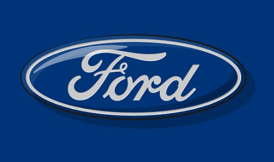
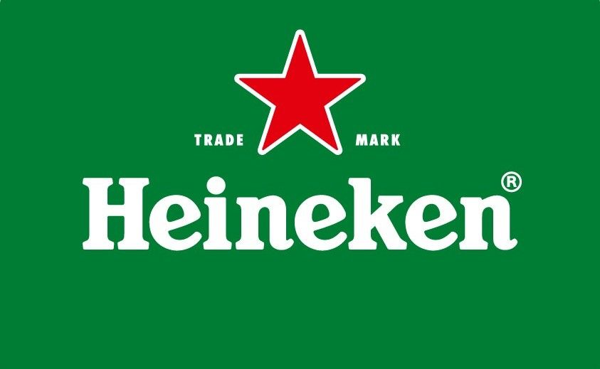
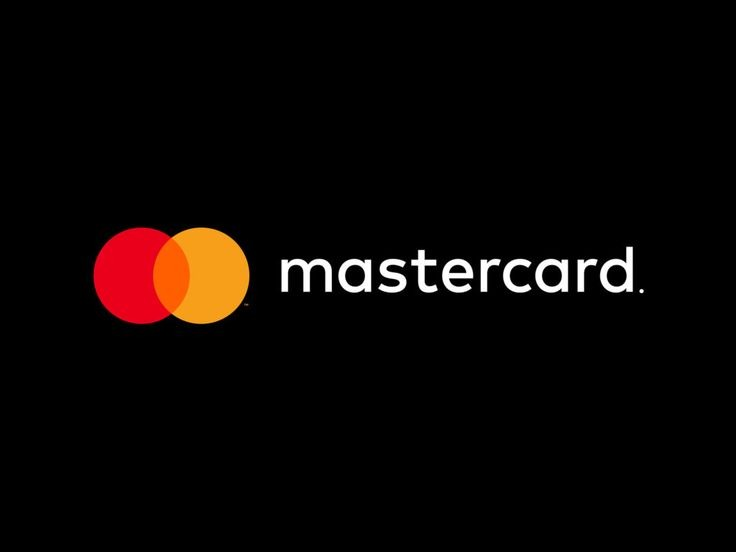
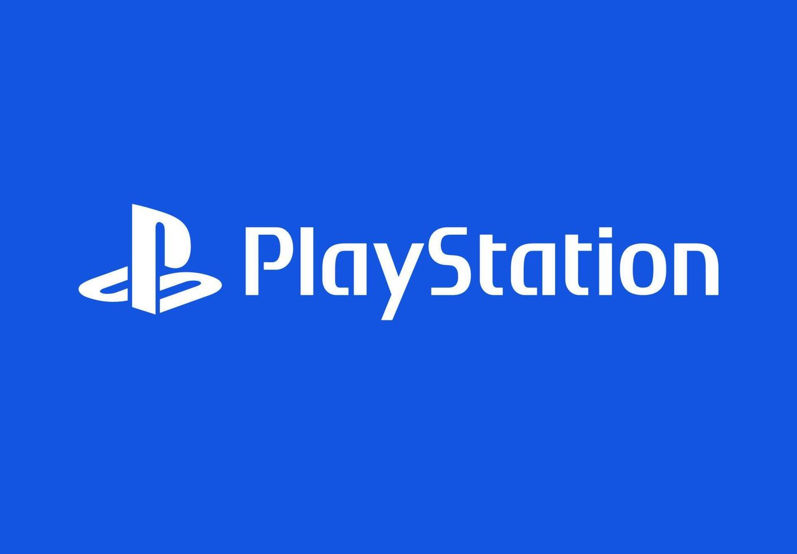
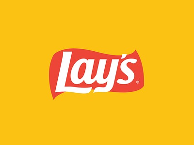

"Podría ser director UEFA, pero soy aprendiz de programación."
Fútbol y programación, con la misma pasión.
"Podría ser director UEFA, pero soy aprendiz de programación."
Fútbol y programación, con la misma pasión.
- Di mis primeros toques en la programación tras hacer un bootcamp en Reus. Todos mis trabajos y hobbies les dedico la misma pasión y seriedad.